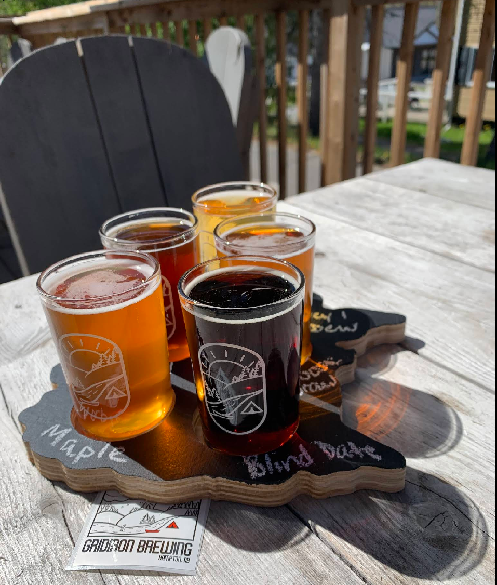

Valley
Lager
Lager
Helles Lager
Valley Lager
Crisp, clean, and endlessly drinkable. The one that started it all.
ABV4.8%
IBU18
FlagshipTwelve flowing right now — five flagships that never leave, and a rotating cast of seasonals. Filter by style or strength to find your pour.
Crisp, clean, and endlessly drinkable. The one that started it all.
Toffee malt with a whisper of hops. Smooth as a worn handle.
Pine, grapefruit, and a resinous bite. Built for hopheads.
Roasted coffee and dark chocolate. Named for the river out back.
Juicy, soft, and citrus-forward. Pillowy with no bitterness.
Balanced, citrusy, sessionable. The patio's favourite.
Peppery, dry, and a little wild. Brewed with valley well water.
Low and lovely. Biscuit malt, soft carbonation, all afternoon.
Floral Saaz hops over a soft, golden body. Spring on tap.
New Brunswick maple folded into a smooth, roasty porter.
Forge IPA turned up to eleven. Dangerously smooth. Mind the steps.
Dark, malty, and warming. Brewed for the worst of the valley winter.
Pull up a flight on the patio — five pours, your pick. Every one is brewed and poured right here in Hampton, with cans and growler fills to take home.
